| My sister-in-law Amy generously included me on
a trip to Hawai'i that she planned for early March. Amy's daughter
Aubrey went, as did one of Amy's friends Jill. The first few days of
the trip, more of Amy's friends were also there so we had a good group to
hang out with. I have always wanted to see Hawai'i so I was thrilled
to go on such a great trip. We just barely made it through the trip
before all the Coronavirus stuff started coming down. Great
timing! |
|
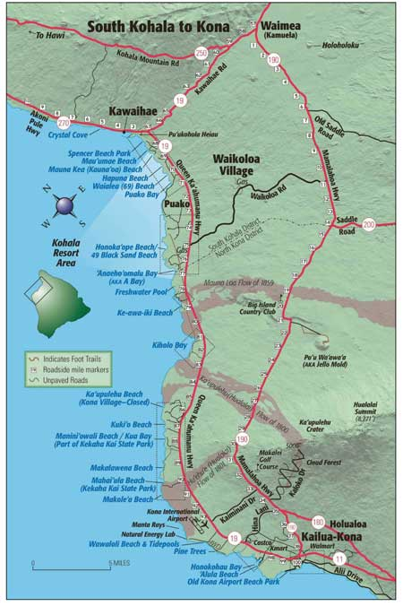 |
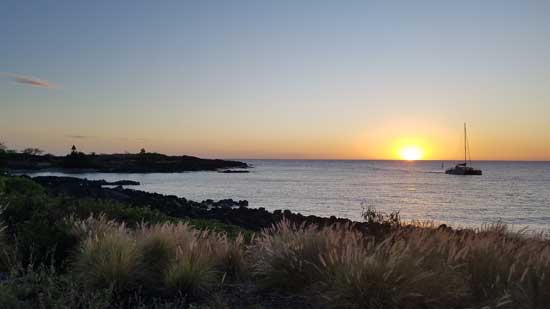 Our first sunset - so lovely. |
| We stayed in Waikoloa Village, away from the bustle of the town of Kona. It was a great place to stay with many good beaches nearby. |
|
|
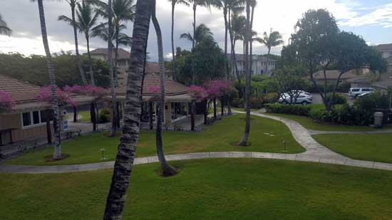 |
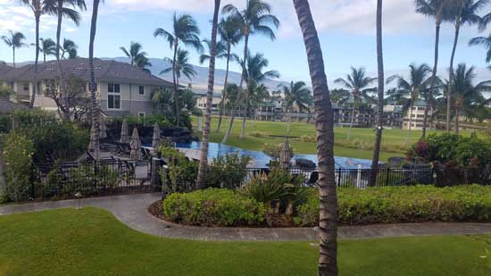 |
| The view from our balcony. The workout room
is toward the left, I cut out the grilling area, and then the infinity pool
was toward the right.
|
|
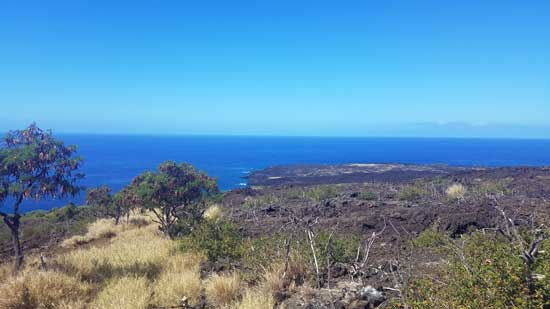 |
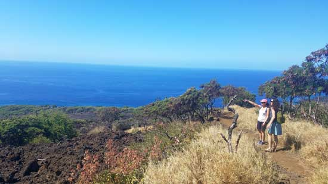 |
| Stopping to admire the view on the hike to Captain Cook Monument bay (Kealakekua Bay) | This picture makes me laugh because I'm always catching the Casazza boys
pointing in photographs, now I've got Amy doing the same thing. She's been hanging around them too long! |
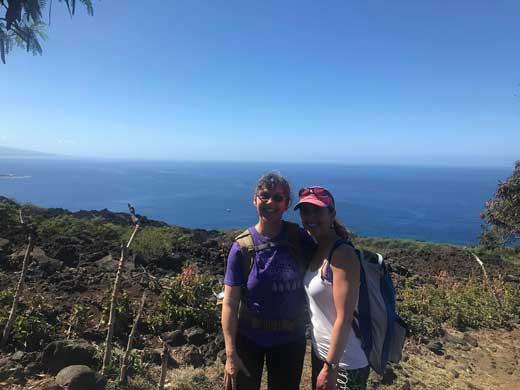 |
|
| Me & Amy | |
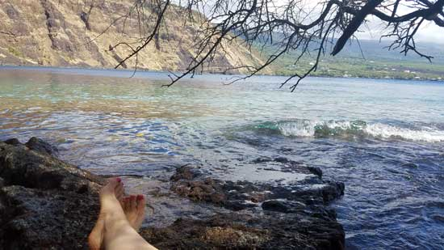 |
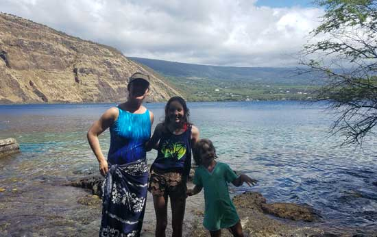 |
| After snorkeling I stretched out for a rest. There were yellow tang
fish you could see from the surface just above my toes, but they aren't very visible in the picture. |
Me with niece Aubrey and Amelia, the daughter of friends who were part of
our group that day. |
| 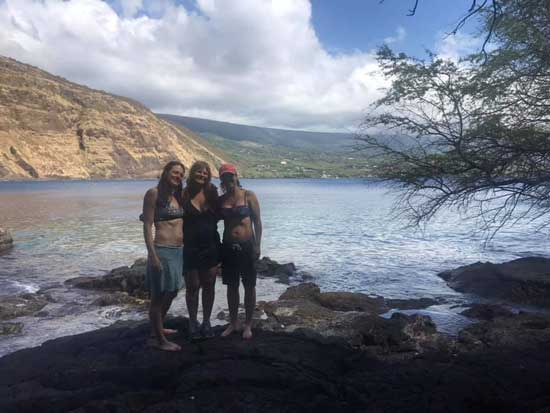 |
|
| Jill, Callie, and Amy - all friends from CFalls | |
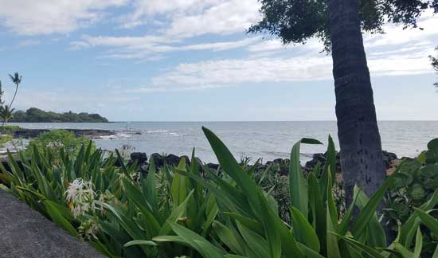 |
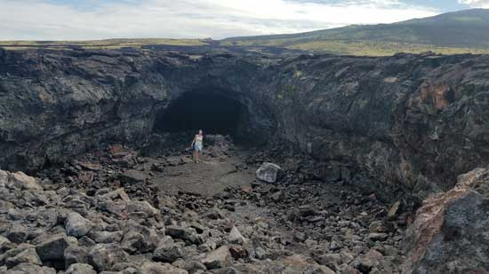 |
| This was the view from the parking lot where we stopped for a late lunch
that day. In Hawai'i, even the parking lots have fantastic views. (BTW - We ate at Da Poke Shack, it was good!) |
We wanted to check out this lava tube, but they have posted "No Trespassing"
signs since Amy was here last. You can't fence Jill in, she had to take a look. We stood lookout for her. |
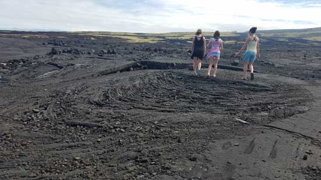 |
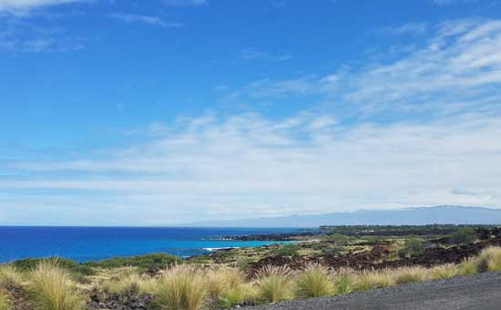 |
| Walking around on a large, old lava flow. | Another amazing view of a beach we were heading toward. |
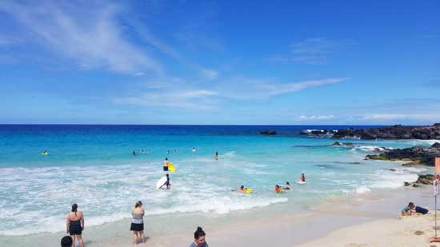 |
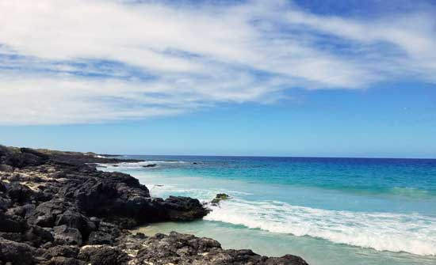 |
| This was a great beach for boogie boarding. It was my first time to do
this and I LOVED it. The nickname for this beach was "Butt Beach" because of two same-sized hills beside it. |
The view from Butt Beach. |
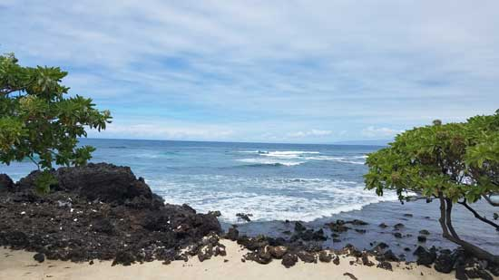 |
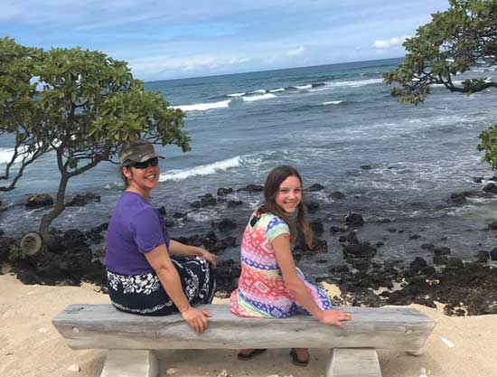 |
| Callie wanted to show us a great snorkeling place, but we got turned around
and took a bit of a walk while trying to meet her there. This was some scenery along our unplanned walk. |
Me & Aubrey catching a rest once we decided we had been heading in the
wrong direction (for about a mile!) Oops. :-) |
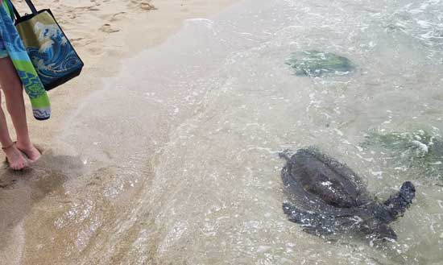 |
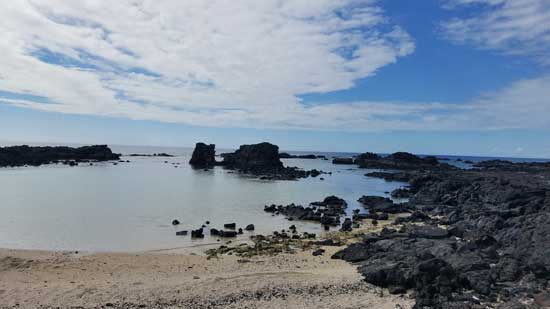 |
| Heading in the other direction now, we encountered our first sea turtle, but
not our last! I think we saw at least one a day from this point on. I included Aubrey's feet in the shot for scale. |
Callie's secret snorkel spot. It was lovely and very
secluded. |
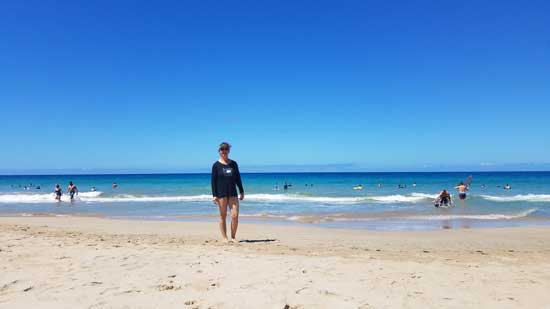 The first few days we enjoyed a routine of 1/2 day boogie boarding
followed by 1/2 day snorkeling. |
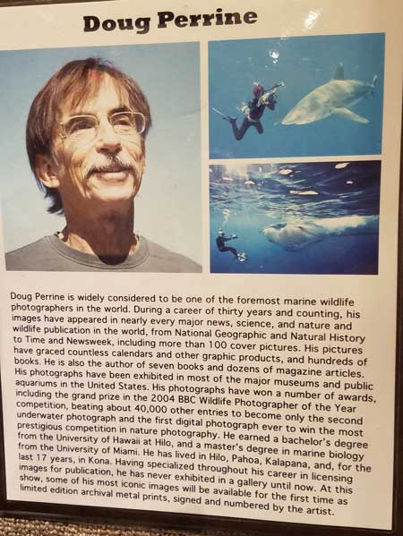 |
| Amy took us to an art gallery that she and Jeb enjoy. It was
amazing! My favorite thing there were the photographs by Doug Perrine. https://dougperrine.photoshelter.com |
|
| 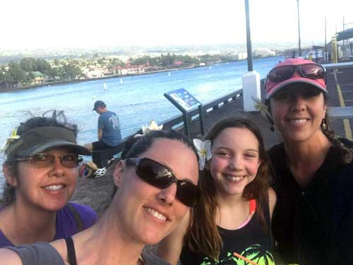 As often as possible, we'd go into Kona for authentic Hawaiian ice. Excellent!
|
|
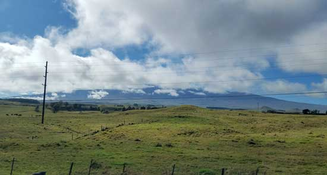 On about the 4th day, we decided to mix things up with a driving tour
of some of the north |
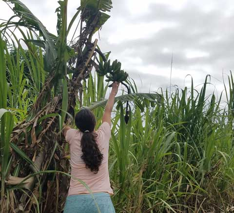 |
| Jill nabs us some bananas from a roadside tree. Unfortunately, they didn't ripen before we left. | |
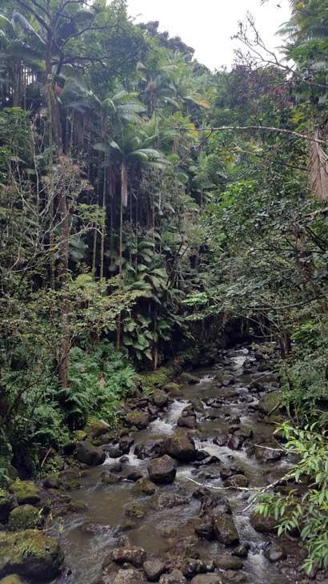 |
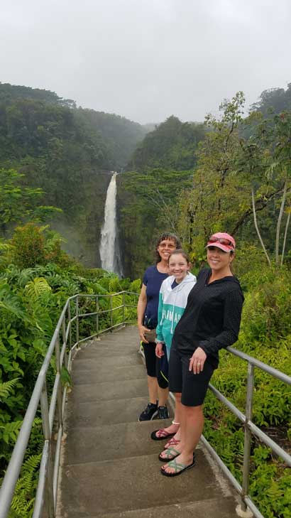 |
| The rainforest vegetation we saw while taking a side road along our drive. | Akaka Falls, a 442 foot tall waterfall. Very beautiful. Thanks Jill for taking the photo! |
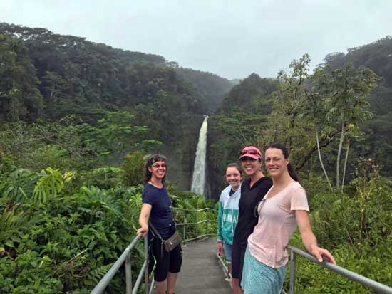 Thanks, stranger on the trail for taking this photo! |
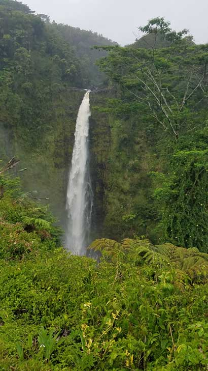 |
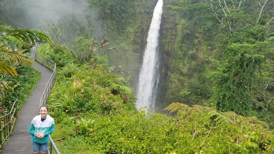 |
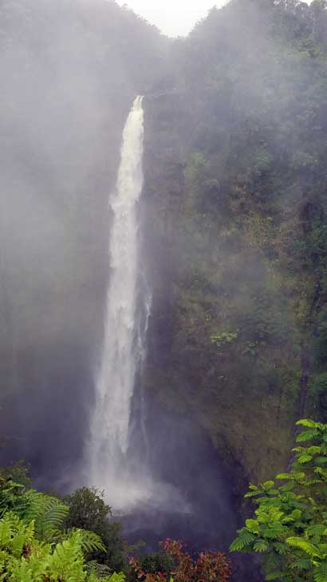 |
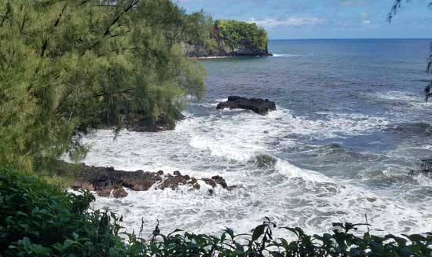 |
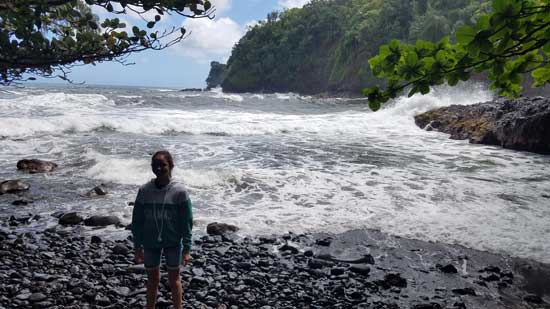 |
| Next stop: Onomea Bay Trail and Donkey Trail, located near Pepeekeo. | The waves were very large and dramatic in this area. It made you feel small. |
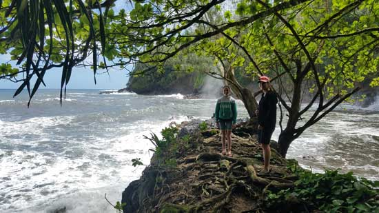 |
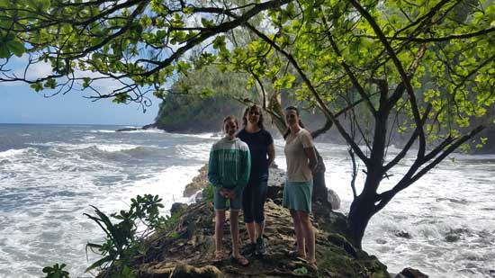 |
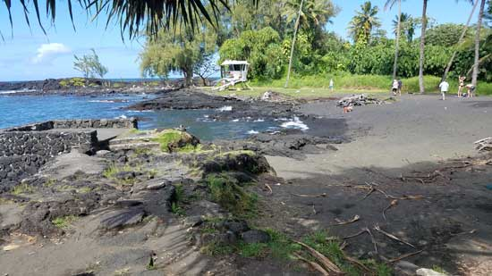 After that, we drove toward Hilo and explored the black sand at
Richardson Beach Park. |
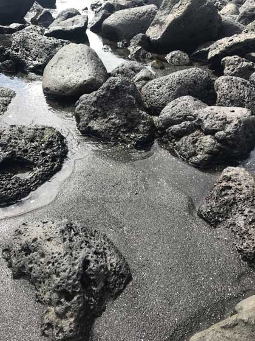 |
| Jill took this great shot of the black sand and it's surrounding lava rocks. | |
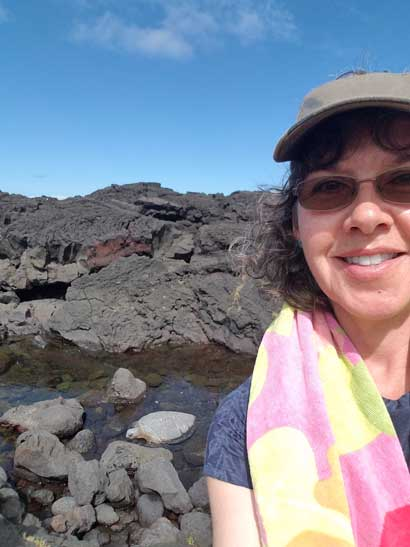 |
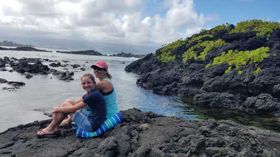 Pretty girls in a pretty spot. |
| A sea turtle sunning himself in the shallow water. | |
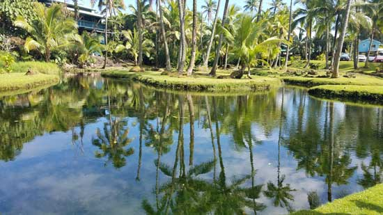 This pretty lagoon is right beside the black sand beach. |
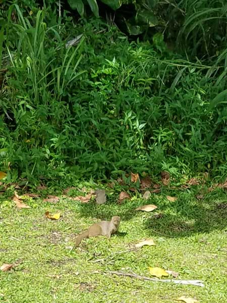 |
| This was a mongoose, they were everywhere. They were imported back in
the day to help control the rat population, but rats are nocturnal and mongooses hunt by day. Typical! (BTW, I did verify the plural form on the internet, so I know it's right!) |
|
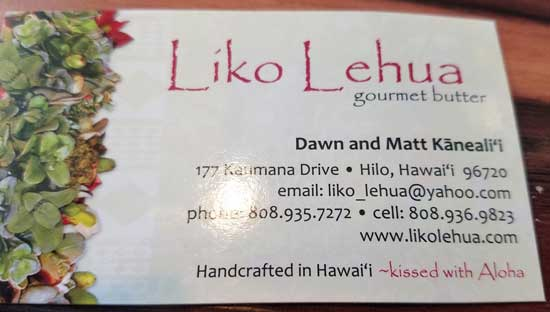 After our black sand interlude, we enjoyed the most wonderful lunch
experience at this place, |
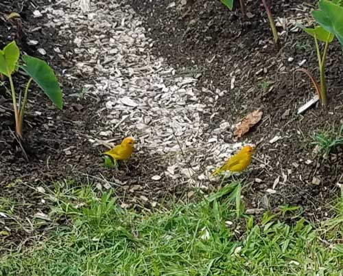 |
| Lovely yellow birdies we kept seeing around the island. I think we saw
different ones each time, but possibly we had avian stalkers. |
|
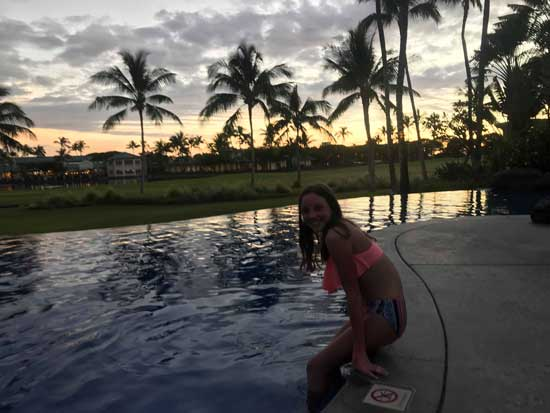 |
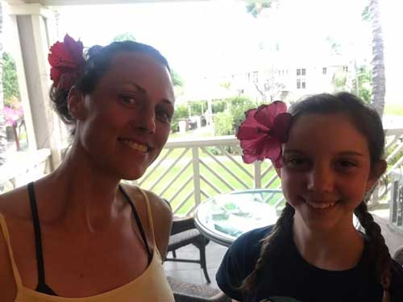 |
| Jill went with Aubrey to swim in the pool, but it was freezing cold.
If Aubrey says the water is too cold, then there's likely ice cubes floating in it. That girl is TOUGH! |
Beautiful girls with their beautiful flowers. |
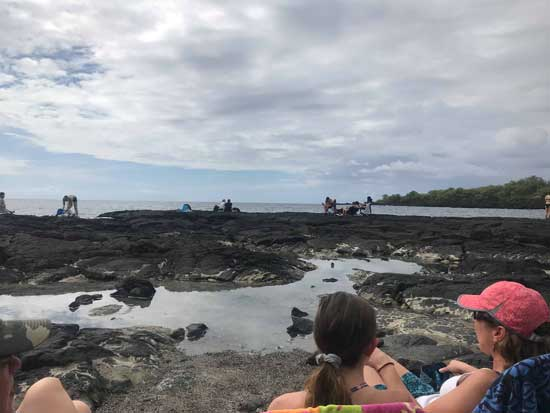 |
Aubrey and I had such a great experience here. We saw dolphins playing in the area when we arrived, but then they disappeared so we started snorkeling. Then we met couple near us who had just seen the dolphins close by. At one point they disappeared and the four of us just watched while |
| Honaunau Bay (aka Two Step), south of Kona. This was a great snorkel spot. | |
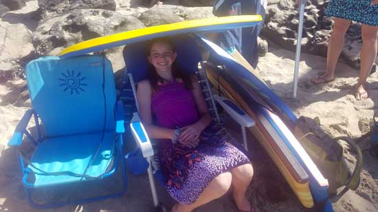 |
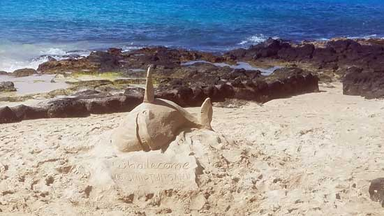 |
| The next day at Magic Sands, a boogie boarding beach in Kona. Aubrey came up with more than one use for a boogie board - shade! |
Sand sculpture at the Magic Sands beach. |
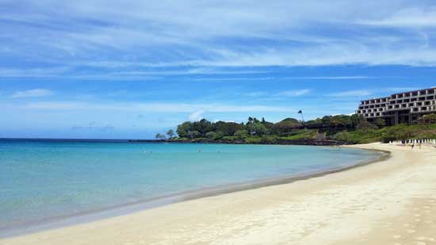 |
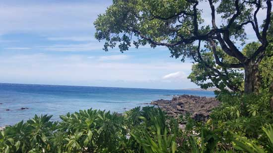 |
| On our last day the wind came up very strong so we weren't able to do
much, we visited this beach and explored the fancy resort next door. The grounds of the resort were beautiful. |
|
|
Beautiful Amy with the beautiful flowers she loves. |
|
| Some more black sand near the resort. | |
| Bird of Paradise flower at the resort | My wounds - on day 1 I got blisters that immediately popped. I fussed
around with these lovely spots of raw skin for the rest of the trip. |
| Sunday was our last day, our flight out was in the evening so we still had
some exploring time. Amy knew of a great church that had outdoor services right beside this beach. It was nice. |
Next we took a walk through this lava field. There were wild goats all over
the island, but we saw the most of them we'd seen here. |
| Trying to get a shot of the goats, but they blended in super well. | There were beautiful chickens and roosters all over the island too. |
| Someone told us this is a cliff-jumping spot called, "The End of the World". We decided not to jump. | I took an underwater camera with me, but didn't take many photos with it
because I didn't think they would turn out - I was wrong! |
| I wish I'd have had this with me the time I got to watch a yellow eel.
Another fish was following it everywhere it went, then the other fish would hover over the eel. It was cool. |
I thought the fish in the lower-right corner was a Pufferfish. No clue if I'm right, so let's just say I am! |
| This was the first of two sea turtles I got to see while snorkeling. They
all seemed to just ignore the humans around them. |
This one was just hanging out in this one spot behind some rocks. We
didn't stay there for long so that he could have his privacy. |
| The airport mystified me. I didn't know you could have an open-air
airport. There were almost no walls! Somehow they make it work. |
This was taken from the boarding line, looking toward my plane (in the center beside the tree). |
|
When I got home, the pets were so thrilled to see me they were beside
themselves. |
|
| Amy was pleasantly surprised to find a plane full of Casazzas on her trip back. Lucas & Kristi's crew had been on Kauai at the same time. |
|